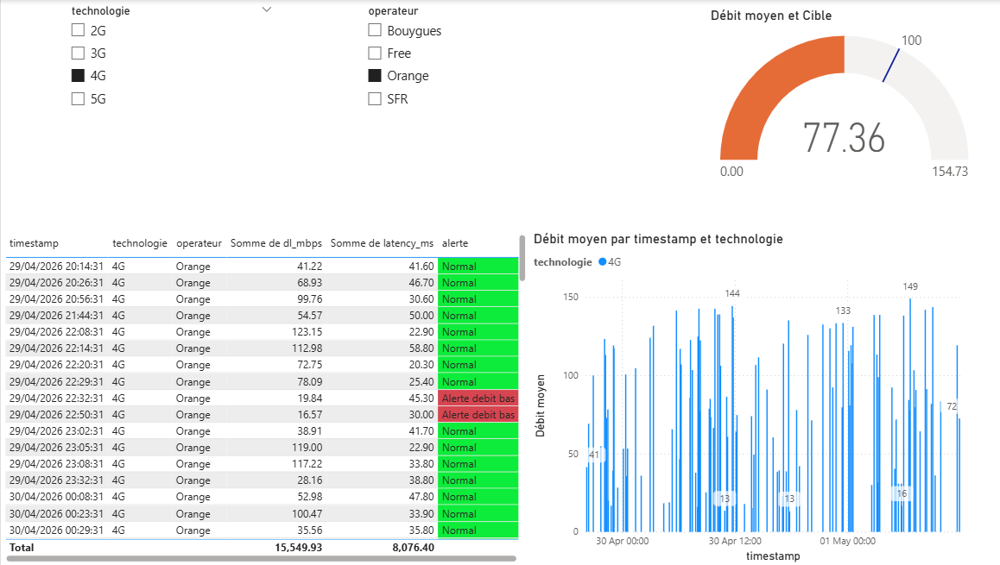

Dashboard interactif temps réel (simulé) construit avec Python, Power BI et les données officielles de l'ARCEP. Comparaison des performances par technologie et par opérateur, alertes visuelles automatiques.

Supervision unifiée des générations 2G, 3G, 4G et 5G. Filtres dynamiques par technologie et par opérateur (Orange, Free, Bouygues, SFR).
Seuils configurables sur le débit descendant : alerte rouge si performances sous la norme attendue pour la technologie.
Débit moyen (Mbps), latence (ms), taux d’alerte – calculés dynamiquement via des mesures DAX.
Script Python injecte une nouvelle mesure toutes les 30 secondes dans un CSV, actualisable manuellement dans Power BI.
Les 3 fichiers ARCEP (sites, mesures QoS, crowdsourcing Ookla) sont chargés par Python, enrichis avec des métriques cohérentes et fusionnés en un seul CSV.
Visuels : jauge de débit en temps réel, courbes d’évolution (une par technologie), tableau des alertes conditionnelles, slicers interactifs.
Ce site statique (GitHub Pages) expose les captures d’écran et la documentation du projet. Une version interactive nécessite une licence Power BI Pro.
✔️ 4G/5G : débit < 10 Mbps
✔️ 2G/3G : débit < 1 Mbps
➜ Alerte visuelle rouge dans le tableau et la jauge.